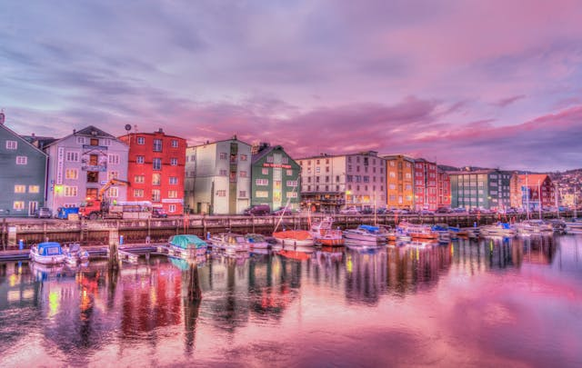

PARA OS AMANTES DE HISTÓRIA
Descubra 3 destinos imperdíveis na Noruega
A Noruega oferece destinos incríveis, desde fiordes espetaculares até cidades vibrantes e paisagens árticas. Oslo, a capital, combina modernidade com natureza e cultura. Bergen, porta de entrada para os fiordes, encanta com suas casas coloridas e montanhas. Tromsø, no norte, é ideal para ver a Aurora Boreal e explorar o Ártico. Lofoten impressiona com suas ilhas montanhosas e vilarejos de pescadores. Stavanger é conhecida por suas trilhas, como a famosa Preikestolen. Já Trondheim destaca-se por sua rica história e arquitetura medieval.
1. Trondheim
Trondheim é uma cidade histórica da Noruega, conhecida por sua catedral gótica de Nidaros, a Universidade NTNU e seu charme medieval. Localizada no centro do país, combina tradição e inovação, oferecendo belas paisagens, museus e uma vida cultural vibrante.
Bom para:
- História

2. Svalbard
Svalbard é um arquipélago pertencente à Noruega, localizado no Oceano Ártico, entre a Noruega continental e o Polo Norte. É conhecido por sua natureza extrema, com geleiras, montanhas e uma fauna que inclui ursos-polares, raposas-do-ártico e renas. A principal cidade, Longyearbyen, é um dos assentamentos mais setentrionais do mundo.
Bom para:
- Família

3. Preikestolen
Preikestolen, também conhecido como Pulpit Rock, é uma das formações rochosas mais famosas da Noruega. Localizado na região de Rogaland, perto da cidade de Stavanger, é um platô de aproximadamente 604 metros de altura com vista para o fiorde de Lysefjord.
Bom para:
- Casais
- Família